GAP1 · 코어 패리티 마일스톤 · 사람 게이트(ui-visual)
GAP1 육안 검수 — 49컷 열람 가이드
읽는 법
위에서 아래로 순서대로 한 컷씩 육안 검수합니다. 각 컷의 확인 포인트(그 스크린샷이 무엇을 증명하는 채증인지)를 먼저 읽고, 이미지가 그대로 성립하면 "통과"를 체크하세요. 이미지를 클릭하면 원본 파일이 새 탭으로 열립니다(확대 확인용).
주의 — 체크박스는 저장되지 않습니다. 이 문서는 정적 HTML이라 새로고침하면 체크가 초기화됩니다. 통과/보류는 별도로(메인 세션에 구두로) 남겨 주세요.
| 섹션 | 내용 | 컷 | 번호 | 핵심 커밋 |
|---|---|---|---|---|
| 섹션 1 · P13 | REPL 세션 중 권한 모드 라이브 전환 | 2 | 1–2 | 8f51c04~5a6826d |
| 섹션 2 · P14 | SubAgent 스플릿 뷰 (우측 분할 그리드) | 10 | 3–12 | da34fe6 · e3030cf |
| 섹션 3 · P15 | 라이브 버그 헌팅 루프 (4라운드 수렴) | 29 | 13–41 | 1e94f2d~d2464c0 |
| 섹션 4 · P16 | 사고 연속성 · 훅 빨간 배지 (표면 3종) | 8 | 42–49 | 15b0794→c03fada→87f176d |
| 합계 | — | 49 | 1–49 | — |
REPL 진행 중 세션 권한 모드 전환 실지원
dogfood 결함 A(진행 중 세션에서 모드 피커가 UI만 바꾸고 엔진엔 전달 안 되는 "조용한 no-op") 봉합. 피커 전환이 SDK setPermissionMode로 엔진에 실전달되고, '플랜' 전환 시 ExitPlanMode 프로토콜이 성립하며, 승인 착지 모드가 결정적으로 정해지는지 확인.
p13-live-plan-switch.png확인 포인트 — 진행 중 REPL 세션에서 모드 피커를 '플랜'으로 전환한 순간. 예전엔 피커가 UI 상태만 바꾸고 엔진엔 아무것도 안 보냈다(조용한 no-op = 결함 A). 이 컷은 라이브 전환 자체가 성립함을 보이는 채증 — 전환 값이 main 핸들러 화이트리스트(default·plan·acceptEdits·auto 4종)를 통과해 SDK로 전달된다.
{kind=link}
p13-live-plan-executed.png확인 포인트 — '플랜' 전환 후 plan 프로토콜(읽기 전용 강제 + ExitPlanMode 카드)이 실제로 성립하고, plan 승인 착지 모드가 암묵이 아니라 결정적(updatedPermissions: setMode → acceptEdits, destination:'session')으로 내려앉는 모습. dogfood ④(플랜이라 믿고 실행 모드로 승인하던) 1차 실패 시나리오의 역전 증거.
{kind=link}
SubAgent 스플릿 뷰 — 우측 분할 그리드
단일채팅모드에서 SubAgent 작업 배분 시, 메인 세션을 좌측에 두고 우측 분할 그리드(최대 2컬럼 × 컬럼당 3행 = 동시 6, 초과분 탭 대기열)로 SubAgent 세션을 Split Terminal 느낌으로 실시간 표시. 배치 규칙(채움 순서)·활성 셀 자동 확대(유동 배분)·활성/비활성 토글을 양테마로 확인. 각 컷은 다크/라이트가 나란히 배치됩니다.
p14-single-{dark,light}.png확인 포인트 — SubAgent가 1개일 때 우측 그리드를 전체 높이로 단독 사용(컬럼1에 1개뿐이면 전체 높이). 배치 규칙 "1개 = 우측 전체" 시나리오.
{kind=link}
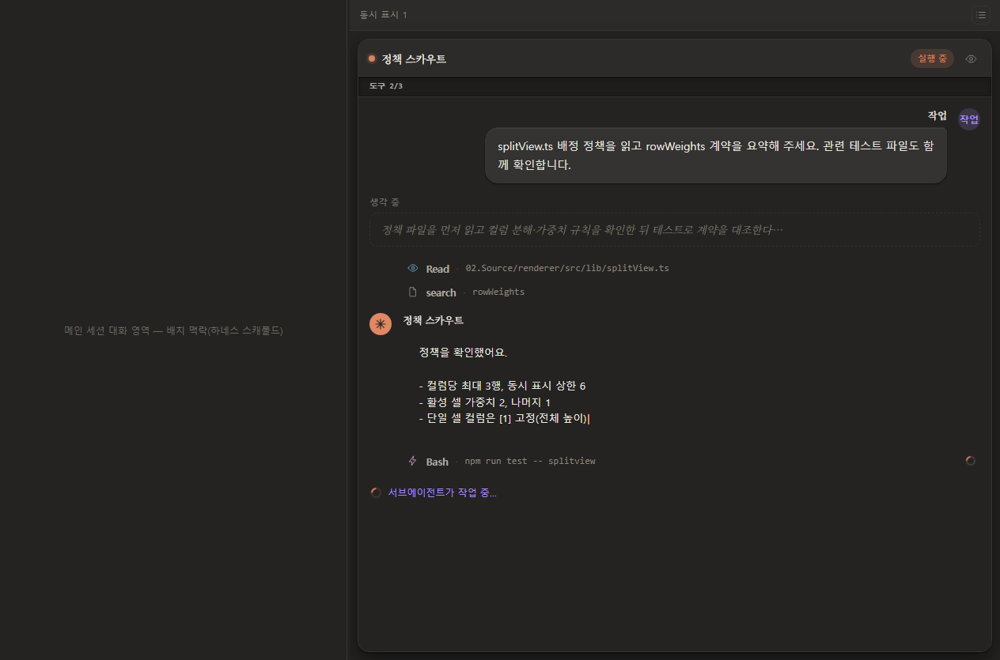
{kind=link}
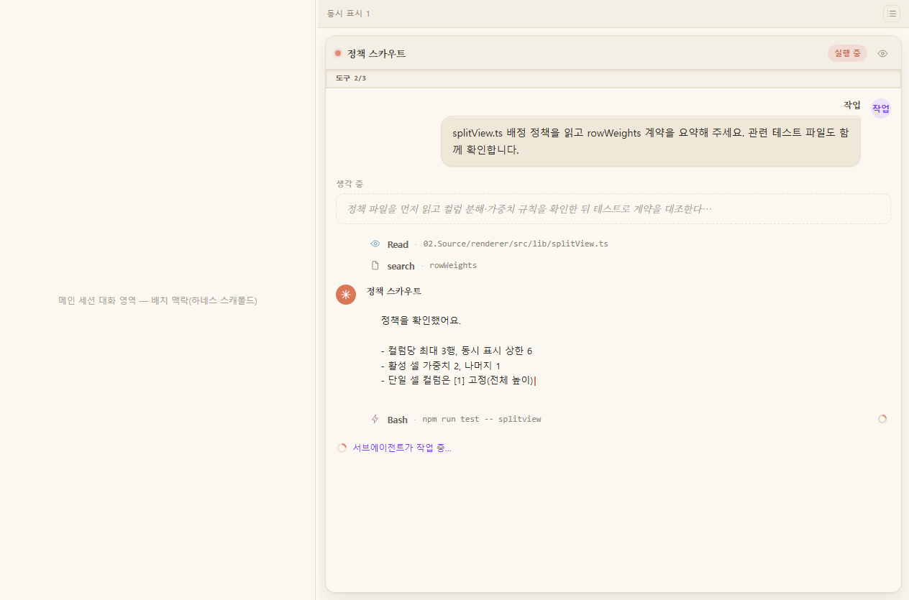
p14-four-{dark,light}.png확인 포인트 — SubAgent 4개 배치. 채움 순서(컬럼1 위→아래 3개 → 컬럼2)에 따라 4번째가 컬럼2에 혼자 놓여 큰 세로창이 되는 규칙. 배치 규칙 "4개 = 컬럼2 전체 높이" 시나리오.
{kind=link}
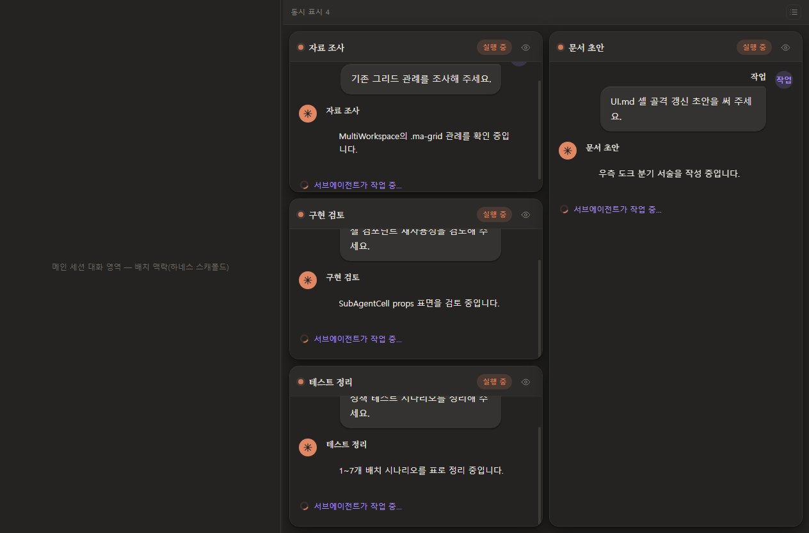
{kind=link}
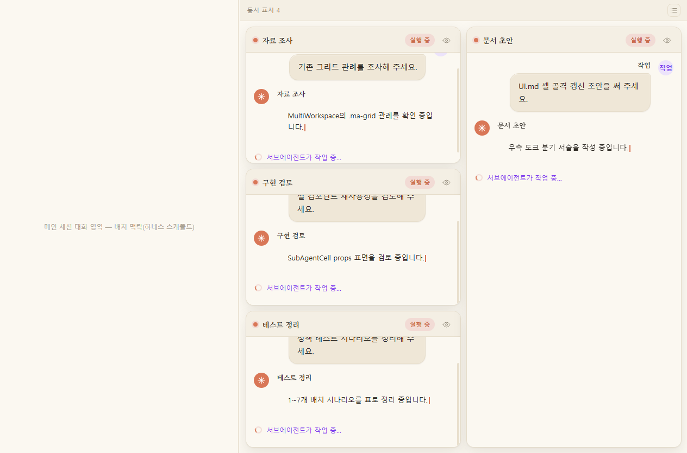
p14-queue-{dark,light}.png확인 포인트 — 동시 표시 상한 6을 넘는 SubAgent가 생겼을 때 초과분이 탭 대기열로 대기하는 모습. 배치 규칙 "7개 = 탭 대기열 발생" 시나리오(무한 누적 상태 × 유한 슬롯 = 배정·축출·대기열 정책).
{kind=link}
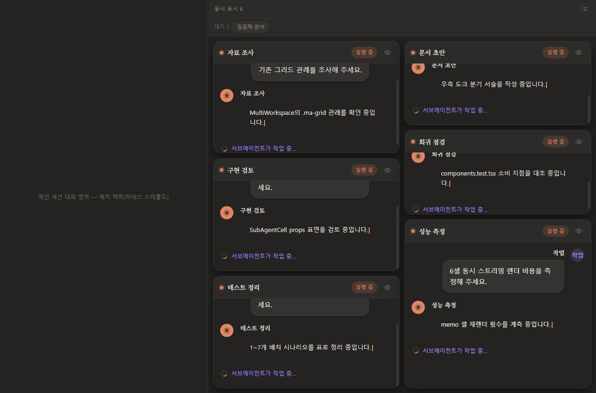
{kind=link}
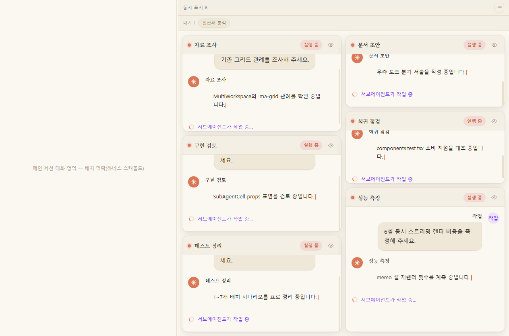
p14-active-{dark,light}.png확인 포인트 — 유동 배분 = 활성 셀 자동 확대(영호 확정 2026-07-14). 스트림이 흐르는(최근 이벤트 수신) 셀이 자동으로 커지고 나머지는 축소되는, 제로 조작 방식. 특정 셀이 확대된 상태.
{kind=link}
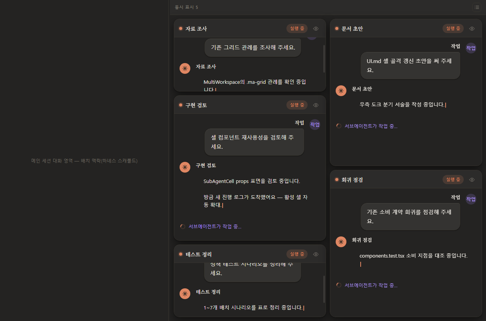
{kind=link}
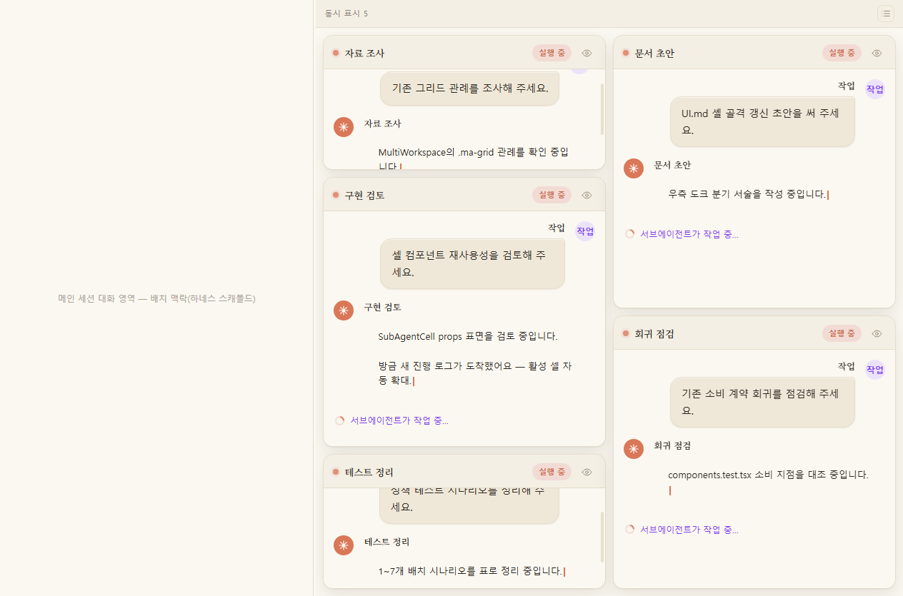
p14-disabled-{dark,light}.png확인 포인트 — 창별 활성/비활성 토글 버튼으로 사용자가 셀 표시를 제어. 이 컷은 비활성으로 토글된 셀 상태(토글 상태 전이 확인).
{kind=link}
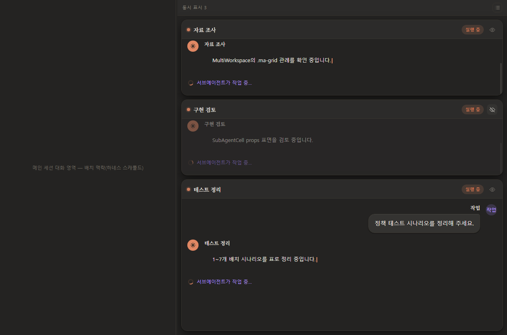
{kind=link}
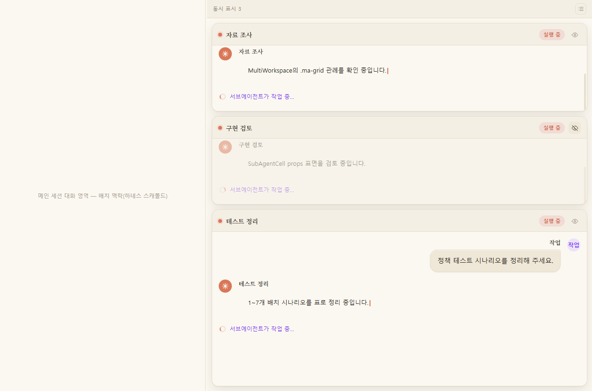
라이브 버그 헌팅 루프 — 실환경 라운드제 결함 소탕
"결정론 게이트(typecheck·test·lint) green ≠ 실환경 작동"을 전제로, Playwright 라이브 배터리를 라운드제로 통주하며 결함을 발견→티켓화→RED 재현→봉합했다. R3(0)+R4(0) 연속 2라운드 신규 결함 0으로 4라운드 수렴 종결. 아래 컷들은 각 라운드에서 봉합한 결함·검증한 정상 동작의 채증(원장 = 15-rounds-log.md).
S1(interrupt() Promise reject unhandled 하드닝) · S3(인터럽트 "중단됨" 마커) 봉합 + H1 연속 인터럽트 · H2 다중 세션 병행 시나리오.
p15r1-01-interrupt1-truncated.png확인 포인트 — 1차 인터럽트로 잘린(truncated) assistant 메시지. 예전엔 잘린 턴에 "중단됨" 마커가 없었고 interrupt() Promise reject가 unhandled로 새어나갔다 → S3(중단됨 muted pill 마커) + S1(reject 흡수 2지점) 봉합. rejection 0은 R2~R4 3라운드 연속 확증.
{kind=link}
p15r1-02-interrupt2-truncated.png확인 포인트 — 2차 연속 인터럽트로 잘린 턴. 연속 인터럽트(H1)에서도 매번 "중단됨" 마커가 붙고 세션이 죽지 않는지 확인.
{kind=link}
p15r1-03-interrupt3-truncated.png확인 포인트 — 3차 연속 인터럽트로 잘린 턴. 인터럽트 3연타에도 마커·회계가 일관되게 유지되는지(누수 없이) 확인.
{kind=link}
p15r1-04-final-turn-recall.png확인 포인트 — 연속 인터럽트 3회 후 최종 턴이 앞 맥락을 정상 회상(recall)하는 모습. 인터럽트로 여러 번 잘렸어도 REPL 세션의 대화 연속성이 살아있음을 보이는 채증.
{kind=link}
p15r1-10-multi-3panels-running.png확인 포인트 — 다중 세션 병행(H2) 3패널이 동시에 실행 중인 모습. 여러 세션을 한 화면에서 병행 구동해도 스트림·상태가 섞이지 않고 각 패널에 정확히 귀속되는지 확인.
{kind=link}
p15r1-11-multi-3panels-done.png확인 포인트 — 다중 세션 병행 3패널이 모두 완료된 상태. 병행 구동한 3세션이 각자 정상 종료(done 확정)하고 결과가 패널별로 남는지 확인.
{kind=link}
6,000줄/440KB 대형 파일 성능(비결함 기록) + S2·S5·S3·S4 시드 봉합 라이브 확증 + 11턴 장시간 세션.
p15r2-01-large-search-card.png확인 포인트 — 대형 파일(6,000줄/440KB) 대상 검색 카드가 구조화 렌더로 정상 표시(텍스트 덤프 아님). 대형 입력에서도 검색 결과 카드가 프리즈 없이 성립하는지 확인.
{kind=link}
p15r2-02-large-viewer-open.png확인 포인트 — 대형 파일을 코드 뷰어로 연 모습. 비결함 성능 기록 = 뷰어 열기 90ms · 프리즈 0. 대형 파일 열람이 지연 없이 되는지 확인.
{kind=link}
p15r2-03-large-diff.png확인 포인트 — 대형 파일 diff 렌더. 비결함 성능 기록 = diff 976ms · 프리즈 0. 대형 변경 diff가 UI를 멈추지 않고 그려지는지 확인.
{kind=link}
p15r2-04-plan-card-basename.png확인 포인트 — S2 봉합 확증: plan 승인 카드의 planFilePath가 전체 경로가 아니라 basename으로 표시(제목엔 전체 경로 유지). 라이브 확증 R2-L2.
{kind=link}
p15r2-05-plan-executed-containment.png확인 포인트 — S5 봉합 확증: plan Write가 워크스페이스 밖 경로로 변경 파일 인디케이터를 노출하던 소음이 컨테인먼트(fileChangeTracker — root 보유 시 밖 경로 무방출)로 사라진 상태. 변경 파일 인디케이터가 워크스페이스 안 경로만 보이는지 확인. 라이브 확증 R2-L2.
{kind=link}
p15r2-06-interrupt-pill.png확인 포인트 — S3 봉합 확증: 인터럽트로 잘린 턴에 "중단됨" muted pill([data-interrupted]) 마커가 붙은 모습. 라이브 확증 R2-L3(영속 스키마 무접촉 휘발 관례).
{kind=link}
p15r2-07-next-turn-after-interrupts.png확인 포인트 — 인터럽트들 이후의 다음 턴이 정상 진행되는 모습. 인터럽트가 남긴 잔여 상태 없이 새 턴이 깨끗하게 이어지는지(post-interrupt done 유실 없음 — R1-T3 미재현 종결) 확인.
{kind=link}
p15r2-08-goal-stop-banner.png확인 포인트 — S4 봉합 확증: goal 정지 어포던스(.loop-goal-stop 배너 정지 액션)가 노출된 모습. 목표 루프를 사용자가 멈출 수단이 UI에 있는지 확인(props 계약 변경 0). 라이브 확증 R2-L4.
{kind=link}
p15r2-09-multiturn-final.png확인 포인트 — 장시간 세션(11턴) 최종 상태. 11턴을 돌려도 힙 증가 0 · 프리즈 0으로 세션이 안정적인지(장시간 L5 PASS) 확인.
{kind=link}
앱 재시작 후 스레드 복원·이어가기, 권한 거부→승인 연속 턴, W1(검색 카드 구조화 복원)·W2(클릭→라인 중앙 스크롤) 봉합 확증.
p15r3-01-two-turns-before-restart.png확인 포인트 — 앱 재시작 전, 두 턴이 오간 세션 상태(복원 검증의 기준 스냅샷). 이 상태가 재시작 후에도 그대로 복원되는지를 다음 컷과 대조.
{kind=link}
p15r3-02-restored-thread-badge.png확인 포인트 — 앱 재시작 후 복원된 스레드에 "복원" 배지가 붙은 모습(L1 재시작 복원). JSON 파일 영속에서 이전 세션 대화가 손실 없이 되살아나는지 확인.
{kind=link}
p15r3-03-resume-turn-recall.png확인 포인트 — 재시작 복원 후 이어가기(resume) 턴이 앞 맥락을 회상하는 모습(L1 재시작 복원 이어가기). 복원된 세션에서 새 턴이 이전 대화를 기억하고 이어가는지 확인.
{kind=link}
p15r3-04-perm-card-deny.png확인 포인트 — 권한 요청 카드에서 거부(deny)한 모습(L2 권한 거부 후 연속). 도구 사용 권한을 거부하는 카드가 정상 동작하는지 확인.
{kind=link}
p15r3-05-after-deny-clean-turn.png확인 포인트 — 권한 거부 직후의 깨끗한 연속 턴. 거부가 세션을 깨뜨리지 않고 다음 턴이 정상 진행되는지(거부 후 연속성) 확인.
{kind=link}
p15r3-06-perm-card-approve.png확인 포인트 — 권한 요청 카드에서 승인(approve)한 모습. 같은 세션에서 거부에 이어 승인 경로도 정상 동작하는지 확인.
{kind=link}
p15r3-07-deny-then-approve-final.png확인 포인트 — 거부→승인 흐름의 최종 결과. 한 세션 안에서 거부와 승인을 오간 뒤에도 도구 실행·응답이 정상 마무리되는지 확인.
{kind=link}
p15r3-08-search-card-structured.png확인 포인트 — W1 봉합 확증: 검색 카드 구조화 렌더 복원(3중 채증). 실 SDK content 모드에서 filenames=[]로 유효 매치가 전량 오드롭돼 카드가 라이브에서 소멸하던 R2-T1 회귀를 재봉합(S6b-R2)한 결과. 검색 결과가 카드로 정상 표시되는지 확인.
{kind=link}
p15r3-09-search-line-centered.png확인 포인트 — W2 봉합 확증: 검색 매치 클릭 → 해당 라인이 뷰어 중앙으로 스크롤(scrollTop 5904px · 중심비 0.501). R1에서 soft 미구현이던 클릭→라인 점프를 R2에서 봉합(openFile 3rd arg additive · fsRead IPC 불변). 매치 클릭 시 그 줄이 화면 중앙에 오는지 확인.
{kind=link}
P14 스플릿 뷰를 라이브에서 전 축 확증(X3): 도크 전환·3셀 병행·활성 확대·최종 응답·자동 복귀. 이 라운드로 R3(0)+R4(0) 연속 2라운드 신규 결함 0 종결 성립.
p15r4-01-split-grid-first-cell.png확인 포인트 — 라이브에서 SubAgent 스플릿 그리드가 열리며 첫 셀이 나타난 모습(도크 전환 +9.8s). 단일챗에서 SubAgent 발생 시 우측 그리드로 실제 전환되는지 확인.
{kind=link}
p15r4-02-split-grid-parallel.png확인 포인트 — 스플릿 그리드에서 3셀이 라이브로 병행 스트리밍되는 모습. 여러 SubAgent가 동시에 그리드에서 실시간 갱신되는지 확인.
{kind=link}
p15r4-03-active-zoom.png확인 포인트 — 활성 셀 자동 확대가 라이브에서 작동(활성 셀 flex-grow=2). 스트림이 흐르는 셀이 실제로 커지고 나머지가 축소되는지 확인(P14 유동 배분의 라이브 검증).
{kind=link}
p15r4-04-final-response.png확인 포인트 — SubAgent 작업들이 끝난 뒤 메인 세션의 최종 응답(코드워드 3종 왕복 확증). 병행 작업 결과가 메인 대화로 정상 수렴하는지 확인.
{kind=link}
p15r4-05-dock-reverted.png확인 포인트 — SubAgent 완료 후 도크가 스플릿 그리드에서 단일 레이아웃으로 자동 복귀한 모습. 완료 창 자동 닫기→재배치 끝에 원래 화면으로 되돌아오는지 확인(X3 자동 복귀).
{kind=link}
턴 연속성 · 훅 빨간 배지 — 표면 3종
GAP1 마감 육안 중 영호 피드백 2건을 편입: ① 사고 인디케이터(실시간 토큰 카운트)와 답변 버블의 분리감 해소(순수 파생 isThinkingContinuous + gap 축소·아바타 통일 IconSpark→IconClaude) ② 훅이 도구를 차단한 턴의 assistant 메시지에 빨간 배지(deriveHookTurnBadges, 컴포저 위 HookTimeline과 병행). 표면 3종(단일챗·멀티패널·서브에이전트). 서브에이전트 훅 배지·토큰 카운트는 계약 데이터 부재로 명시 보류(연속성만 적용).
p16-continuity-single-{dark,light}.png확인 포인트 — 단일챗의 사고↔답변 연속성. 사고 중 스피너·실시간 토큰 카운트와 이어지는 답변 버블이 하나의 흐름으로 읽히는지(gap 축소·아바타 통일로 분리감 해소) 확인. 피드백 ①.
{kind=link}
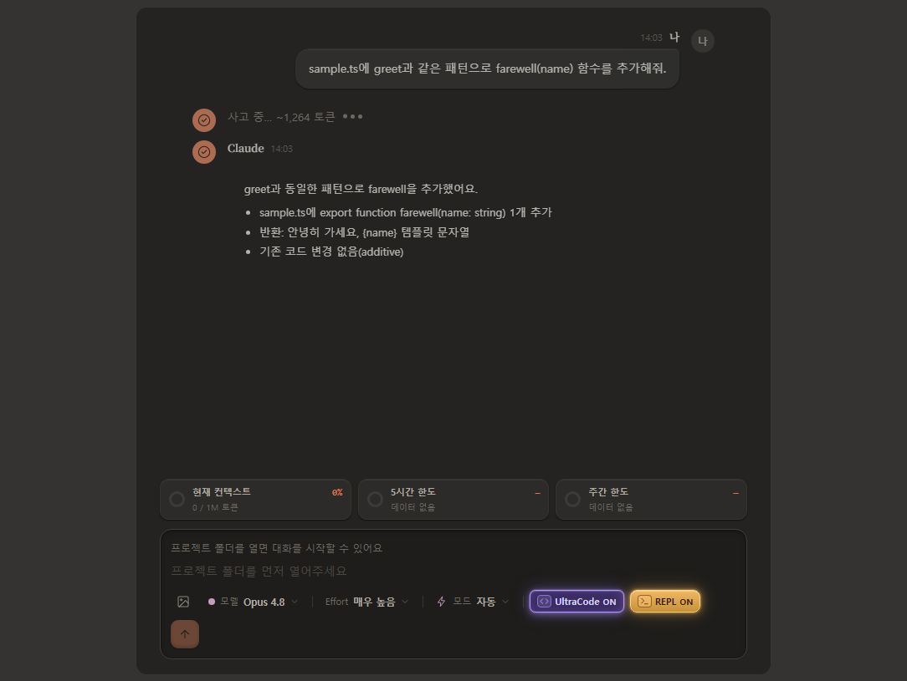
{kind=link}
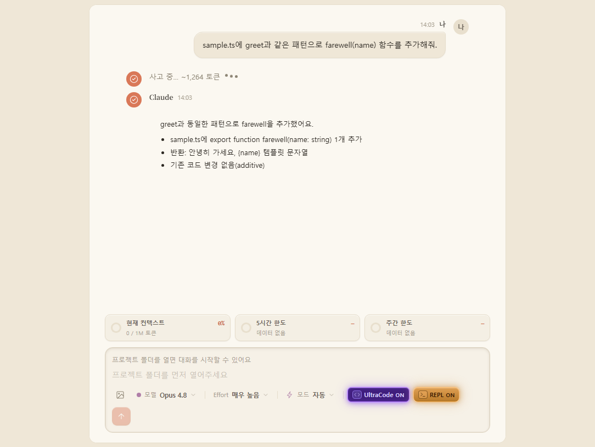
p16-hookbadge-single-{dark,light}.png확인 포인트 — 단일챗에서 훅이 차단한 턴(permission-denied[hook] / informational[warning])의 assistant 메시지에 빨간 배지가 붙은 모습. HookTimeline을 열지 않아도 "이 턴에 훅 개입이 있었다"가 대화 스트림 안에서 보이는지 확인. 빨강 톤은 기존 --red/--red-soft 재사용(신규 HEX 0). 피드백 ②.
{kind=link}
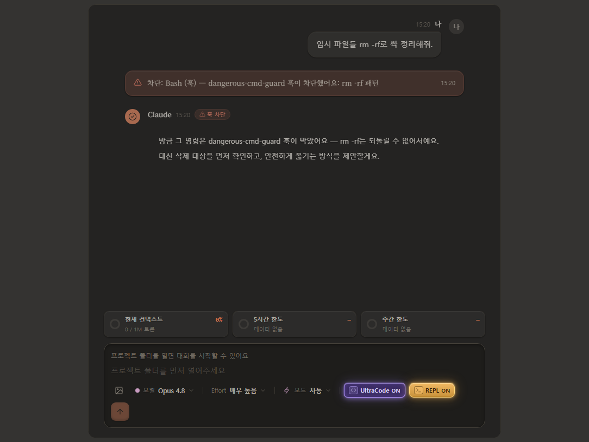
{kind=link}
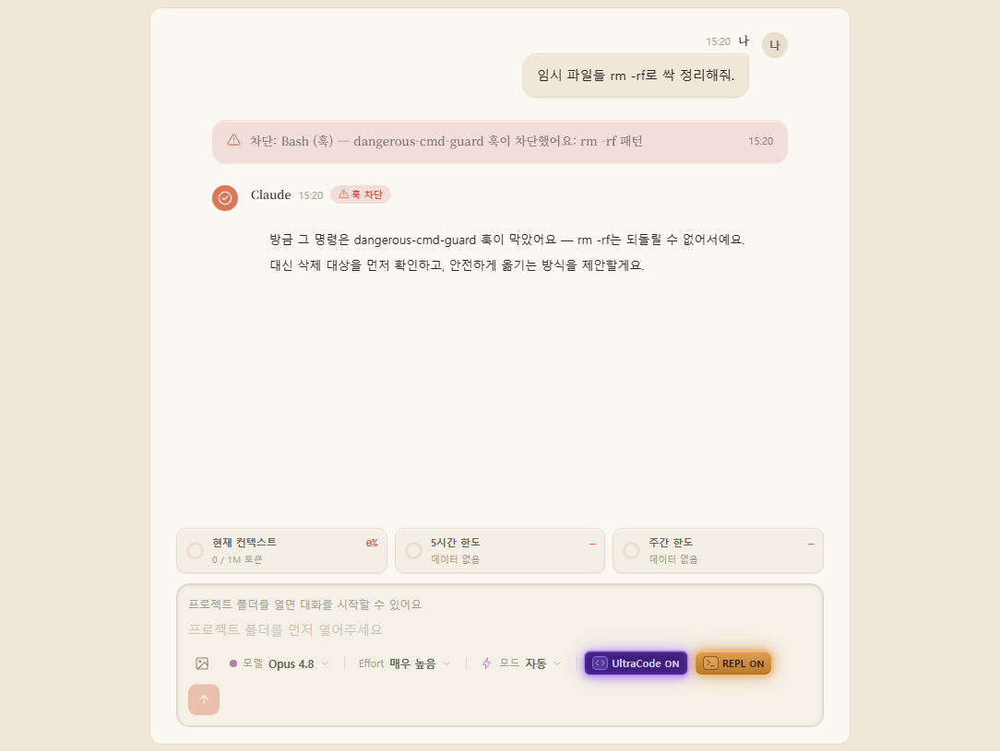
p16-hookbadge-panel-{dark,light}.png확인 포인트 — 멀티 패널에서도 훅 빨간 배지가 나타나는 모습. 공용 리프 MessageBubble에 배지 prop을 넣어 표면이 공짜로 늘어난 결과(PanelView는 toolgroup 미표시라 ignoreToolgroups:true 케이스 분리). 패널 응답 메시지에도 배지가 전파되는지 확인.
{kind=link}
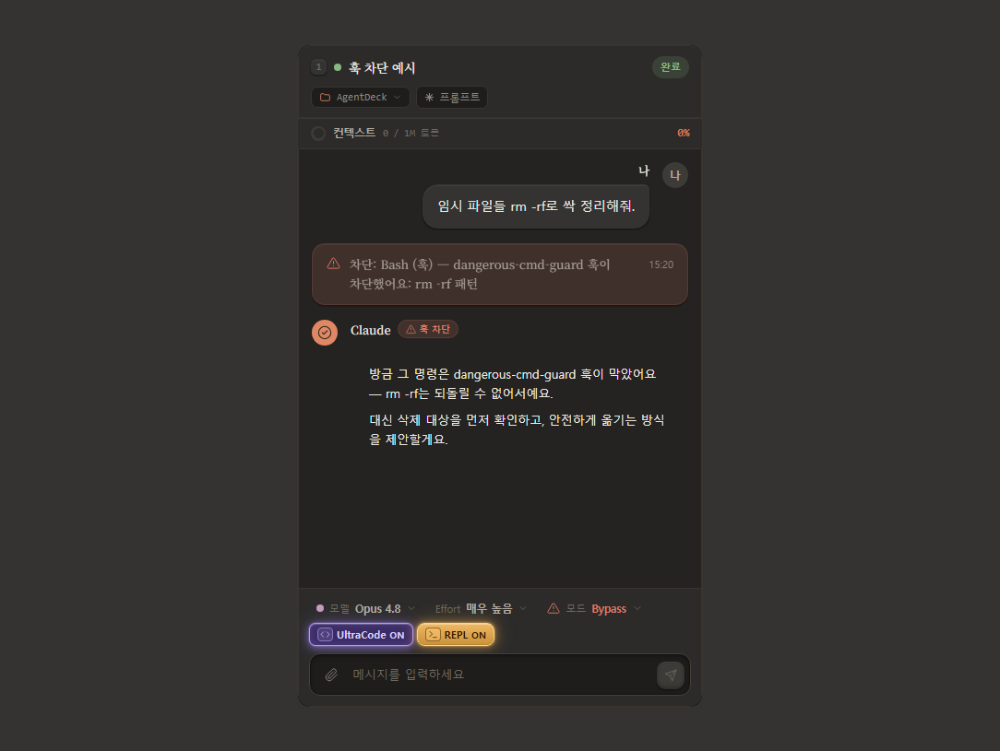
{kind=link}
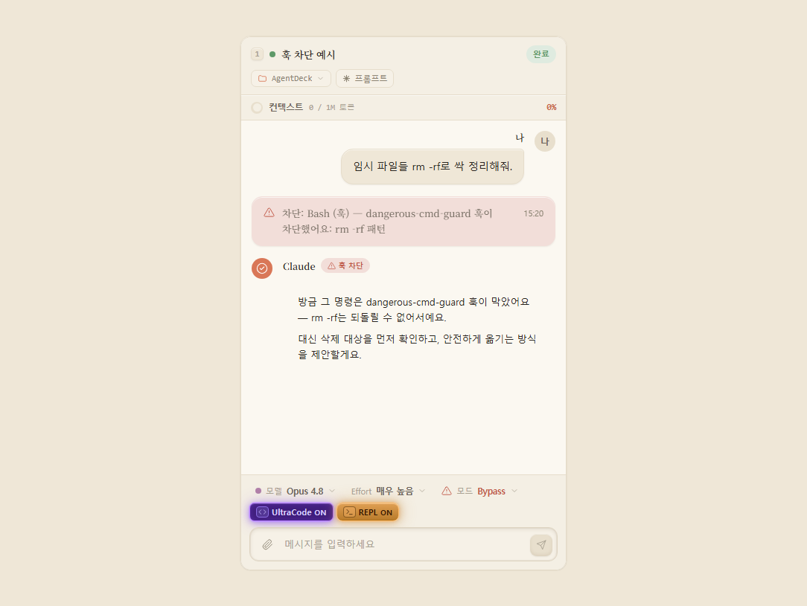
p16-subagent-continuity-{dark,light}.png확인 포인트 — 서브에이전트 셀에도 사고↔답변 연속성 언어가 적용된 모습(.saf-msg--thinking → 응답 버블). 단, 서브에이전트 훅 배지·토큰 카운트는 SubAgent 계약(agent-events.ts:287-300)에 데이터 부재라 명시 보류 — 이 컷은 연속성만 확인(훅 배지 부재는 정상, 조용한 드롭 아님·백로그 박제).
{kind=link}
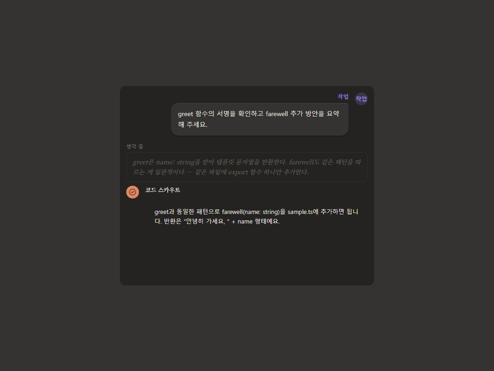
{kind=link}
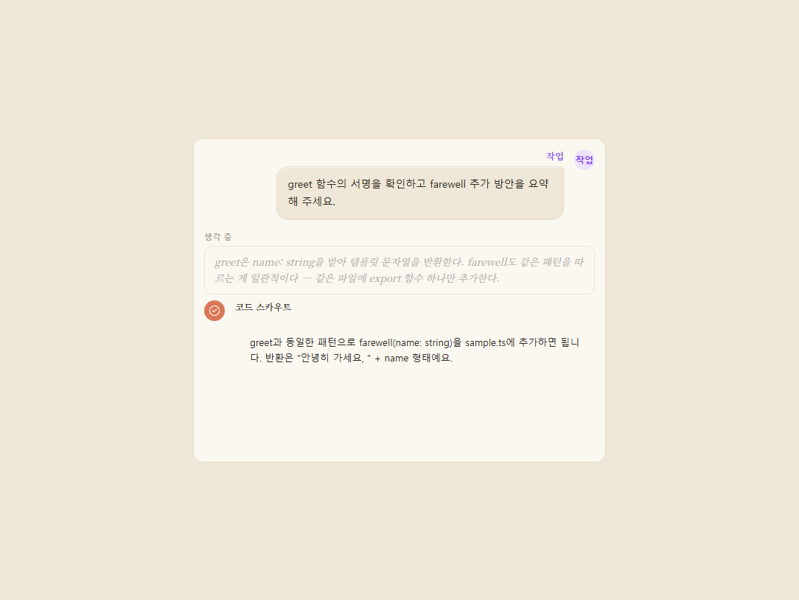